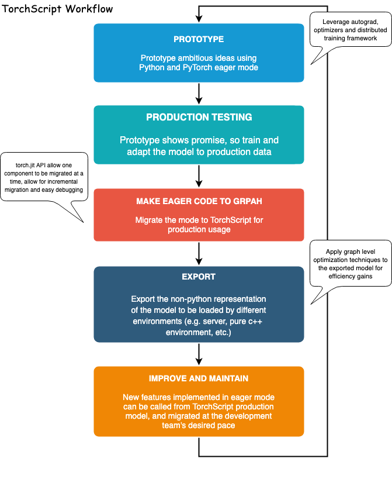
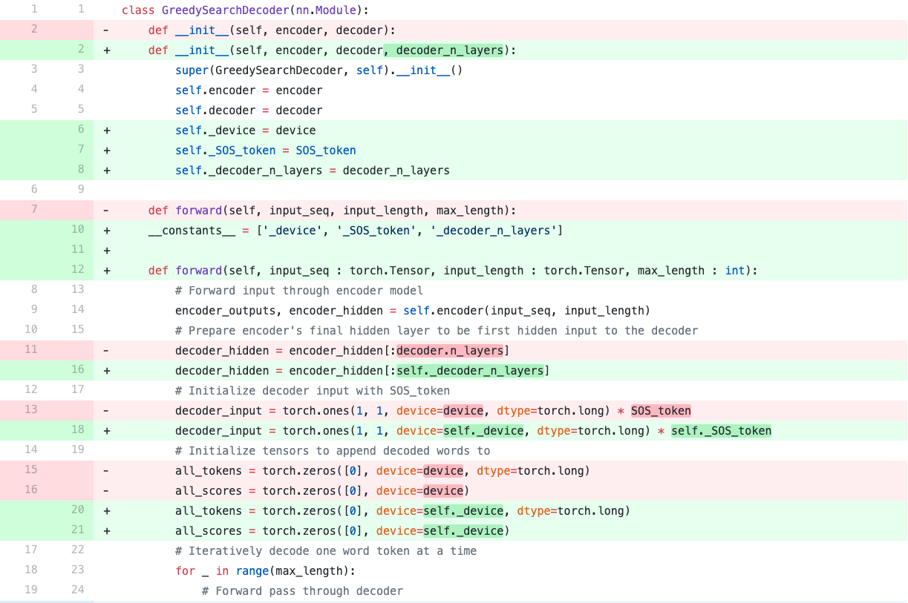

备注
点击 这里
下载完整示例代码
部署 TorchScript 中的 Seq2Seq 模型 ¶
创建时间：2025年4月1日 | 最后更新时间：2025年4月1日 | 最后验证时间：2024年11月5日
警告
TorchScript 不再处于活跃开发状态。
本教程将指导您完成过渡过程
使用 TorchScript 将序列到序列模型转换为 TorchScript
API。我们将转换的模型是聊天机器人模型
聊天机器人教程 。您可以将其作为“第 2 部分”来处理聊天机器人教程并部署您自己的预训练模型，或者您可以从本文档开始，并使用我们提供的预训练模型。在后一种情况下，您可以参考原始聊天机器人教程以获取有关数据预处理、模型理论和定义以及模型训练的详细信息。
什么是 TorchScript?¶
在基于深度学习的项目研发阶段，与像 PyTorch 这样的<强 id=0>渴望 、命令式的界面交互是有利的。这使用户能够编写熟悉的、惯用的 Python 代码，允许使用 Python 数据结构、控制流操作、打印语句和调试工具。尽管渴望式界面是研究和实验应用的有益工具，但当需要将模型部署到生产环境时，拥有基于<强 id=1>图的模型表示非常有用。延迟图表示允许进行诸如乱序执行和针对高度优化的硬件架构的能力等优化。此外，基于图的表示还使模型导出与框架无关。PyTorch 提供了将渴望模式代码增量转换为 TorchScript 的机制，TorchScript 是 Python 的一个静态可分析和可优化的子集，Torch 使用它来独立于 Python 运行时表示深度学习程序。
将 eager-mode PyTorch 程序转换为 TorchScript 的 API 位于 torch.jit 模块中。此模块有两个核心模式用于
将 eager-mode 模型转换为 TorchScript 图表示：
tracing 和 scripting。torch.jit.trace 函数接受一个模块或函数以及一组示例输入。然后它通过函数或模块运行示例输入，同时记录遇到的计算步骤，并输出执行所记录操作的基于图的函数。Tracing 非常适合没有涉及数据依赖控制流的简单模块和函数，例如标准的卷积神经网络。然而，如果对包含数据依赖 if 语句和循环的函数进行 tracing，则只会记录示例输入执行路径上调用的操作。换句话说，控制流本身没有被捕获。为了转换包含数据依赖控制流的模块和函数，提供了一个 scripting 机制。该
torch.jit.script 函数/装饰器接受一个模块或函数，并且不需要示例输入。脚本化会显式地将模块或函数代码转换为 TorchScript，包括所有控制流。使用脚本的一个注意事项是它只支持 Python 的一个子集，因此你可能需要重写代码以使其与 TorchScript 语法兼容。
有关支持的所有功能的详细信息，请参阅 TorchScript。
语言参考 。 为了提供最大的灵活性，您还可以混合跟踪和脚本模式来表示整个程序，并且可以将这些技术逐步应用。

致谢 。
本教程灵感来源于以下来源：
来自袁奎魏的 pytorch-chatbot 实现： https://github.com/ywk991112/pytorch-chatbot
Sean Robertson 的实用 PyTorch seq2seq-translation 示例： https://github.com/spro/practical-pytorch/tree/master/seq2seq-translation
FloydHub 的 Cornell 电影语料库预处理代码： https://github.com/floydhub/textutil-preprocess-cornell-movie-corpus
准备环境 ¶
首先，我们将导入所需的模块并设置一些常量。如果
你打算使用自己的模型，确保
代码中的 MAX_LENGTH 常量设置正确。作为提醒，此常量定义了训练期间允许的最大句子长度以及模型能够生成的最大长度输出。
import torch
import torch.nn as nn
import torch.nn.functional as F
import re
import os
import unicodedata
import numpy as np
device = torch.device("cpu")
MAX_LENGTH = 10 # Maximum sentence length
# Default word tokens
PAD_token = 0 # Used for padding short sentences
SOS_token = 1 # Start-of-sentence token
EOS_token = 2 # End-of-sentence token
模型概述 ¶
如上所述，我们使用的模型是一个
序列到序列 （seq2seq）模型。此类模型用于我们的输入是变长序列，且输出也是变长序列，不一定是输入的一对一映射的情况。seq2seq 模型由两个协同工作的循环神经网络（RNNs）组成：一个编码器和一个解码器 。

图片来源：
https://jeddy92.github.io/JEddy92.github.io/ts_seq2seq_intro/
编码器 ¶
编码器 RNN 逐个标记（例如单词）遍历输入句子，在每个时间步输出一个“输出”向量和“隐藏状态”向量。隐藏状态向量随后传递到下一个时间步，而输出向量被记录下来。编码器将它在序列中每个点看到的上下文转换为高维空间中的一系列点，解码器将使用这些点来为给定任务生成有意义的输出。
解码器 ¶
解码器 RNN 逐个生成响应句子。它使用编码器的上下文向量以及内部隐藏状态来生成序列中的下一个单词。它继续生成单词，直到输出一个代表句子结束的 EOS_token。我们使用一个注意力
机制在我们的解码器中，帮助它在生成输出时“关注”输入的某些部分。对于我们的模型，我们实现了 Luong 等
al. 的“全球注意力”模块，并将其作为解码模型的子模块使用。
数据处理 ¶
虽然我们的模型在概念上处理标记序列，但实际上，它们像所有机器学习模型一样处理数字。在这种情况下，模型在训练之前建立的词汇表中的每个单词都被映射到一个整数索引。我们使用一个词汇表对象来包含从单词到索引的映射，以及词汇表中的单词总数。在运行模型之前，我们将加载该对象。
此外，为了我们能够运行评估，我们必须提供一个处理我们字符串输入的工具。normalizeString 函数将字符串中的所有字符转换为小写并删除所有非字母字符。indexesFromSentence 函数接受一个单词句子并返回相应的单词索引序列。
class Voc:
def __init__(self, name):
self.name = name
self.trimmed = False
self.word2index = {}
self.word2count = {}
self.index2word = {PAD_token: "PAD", SOS_token: "SOS", EOS_token: "EOS"}
self.num_words = 3 # Count SOS, EOS, PAD
def addSentence(self, sentence):
for word in sentence.split(' '):
self.addWord(word)
def addWord(self, word):
if word not in self.word2index:
self.word2index[word] = self.num_words
self.word2count[word] = 1
self.index2word[self.num_words] = word
self.num_words += 1
else:
self.word2count[word] += 1
# Remove words below a certain count threshold
def trim(self, min_count):
if self.trimmed:
return
self.trimmed = True
keep_words = []
for k, v in self.word2count.items():
if v >= min_count:
keep_words.append(k)
print('keep_words {} / {} = {:.4f}'.format(
len(keep_words), len(self.word2index), len(keep_words) / len(self.word2index)
))
# Reinitialize dictionaries
self.word2index = {}
self.word2count = {}
self.index2word = {PAD_token: "PAD", SOS_token: "SOS", EOS_token: "EOS"}
self.num_words = 3 # Count default tokens
for word in keep_words:
self.addWord(word)
# Lowercase and remove non-letter characters
def normalizeString(s):
s = s.lower()
s = re.sub(r"([.!?])", r" \1", s)
s = re.sub(r"[^a-zA-Z.!?]+", r" ", s)
return s
# Takes string sentence, returns sentence of word indexes
def indexesFromSentence(voc, sentence):
return [voc.word2index[word] for word in sentence.split(' ')] + [EOS_token]
定义编码器 ¶
我们使用 torch.nn.GRU 模块实现编码器的 RNN，该模块接收一个句子批次的词嵌入向量，并逐个标记地遍历句子，计算隐藏状态。我们将此模块初始化为双向的，这意味着我们有两个独立的 GRU：一个按时间顺序遍历序列，另一个按反向顺序遍历。我们最终返回这两个 GRU 输出的总和。由于我们的模型是使用批处理训练的，因此我们的 EncoderRNN 模型的
forward 函数期望一个填充的输入批次。为了批处理变长句子，我们允许句子中最多有 MAX_LENGTH 个标记
，并且批次中的所有句子都少于
最大长度 MAX_LENGTH 的标记在末尾用我们的专用 PAD_token 填充
分词。要使用填充的批次与 PyTorch RNN 模块一起使用，我们必须包装
正向传递调用 torch.nn.utils.rnn.pack_padded_sequence
注意，forward 函数还接受一个包含每个句子长度的 input_lengths 列表，该输入在填充时由 torch.nn.utils.rnn.pack_padded_sequence 函数使用。
TorchScript 笔记:¶
由于编码器的 forward 函数不包含任何数据相关的控制流，我们将使用跟踪将其转换为脚本模式。在跟踪模块时，我们可以保持模块定义不变。在运行评估之前，我们将在此文档的末尾初始化所有模型。
class EncoderRNN(nn.Module):
def __init__(self, hidden_size, embedding, n_layers=1, dropout=0):
super(EncoderRNN, self).__init__()
self.n_layers = n_layers
self.hidden_size = hidden_size
self.embedding = embedding
# Initialize GRU; the ``input_size`` and ``hidden_size`` parameters are both set to 'hidden_size'
# because our input size is a word embedding with number of features == hidden_size
self.gru = nn.GRU(hidden_size, hidden_size, n_layers,
dropout=(0 if n_layers == 1 else dropout), bidirectional=True)
def forward(self, input_seq, input_lengths, hidden=None):
# type: (Tensor, Tensor, Optional[Tensor]) -> Tuple[Tensor, Tensor]
# Convert word indexes to embeddings
embedded = self.embedding(input_seq)
# Pack padded batch of sequences for RNN module
packed = torch.nn.utils.rnn.pack_padded_sequence(embedded, input_lengths)
# Forward pass through GRU
outputs, hidden = self.gru(packed, hidden)
# Unpack padding
outputs, _ = torch.nn.utils.rnn.pad_packed_sequence(outputs)
# Sum bidirectional GRU outputs
outputs = outputs[:, :, :self.hidden_size] + outputs[:, : ,self.hidden_size:]
# Return output and final hidden state
return outputs, hidden
定义解码器的注意力模块 ¶
接下来，我们将定义我们的注意力模块(Attn)。请注意，此模块将作为子模块用于我们的解码器模型。Luong 等人考虑了各种“得分函数”，这些函数接受当前解码器 RNN 输出和整个编码器输出，并返回注意力“能量”。这个注意力能量张量的大小与编码器输出相同，最终将两者相乘，得到一个加权张量，其最大值表示在解码的特定时间步中查询句子的最重要部分。
# Luong attention layer
class Attn(nn.Module):
def __init__(self, method, hidden_size):
super(Attn, self).__init__()
self.method = method
if self.method not in ['dot', 'general', 'concat']:
raise ValueError(self.method, "is not an appropriate attention method.")
self.hidden_size = hidden_size
if self.method == 'general':
self.attn = nn.Linear(self.hidden_size, hidden_size)
elif self.method == 'concat':
self.attn = nn.Linear(self.hidden_size * 2, hidden_size)
self.v = nn.Parameter(torch.FloatTensor(hidden_size))
def dot_score(self, hidden, encoder_output):
return torch.sum(hidden * encoder_output, dim=2)
def general_score(self, hidden, encoder_output):
energy = self.attn(encoder_output)
return torch.sum(hidden * energy, dim=2)
def concat_score(self, hidden, encoder_output):
energy = self.attn(torch.cat((hidden.expand(encoder_output.size(0), -1, -1), encoder_output), 2)).tanh()
return torch.sum(self.v * energy, dim=2)
def forward(self, hidden, encoder_outputs):
# Calculate the attention weights (energies) based on the given method
if self.method == 'general':
attn_energies = self.general_score(hidden, encoder_outputs)
elif self.method == 'concat':
attn_energies = self.concat_score(hidden, encoder_outputs)
elif self.method == 'dot':
attn_energies = self.dot_score(hidden, encoder_outputs)
# Transpose max_length and batch_size dimensions
attn_energies = attn_energies.t()
# Return the softmax normalized probability scores (with added dimension)
return F.softmax(attn_energies, dim=1).unsqueeze(1)
定义解码器 ¶
类似于编码器 RNN，我们使用 torch.nn.GRU 模块来
实现我们的解码器 RNN。然而，这一次，我们使用了一个单向 GRU。需要注意的是，
与编码器不同，我们将向解码器输入
RNN 逐词翻译。我们首先获取当前词的嵌入，然后应用
一个
dropout。接下来，我们将嵌入和最后一个隐藏状态传递给 GRU，获得当前的 GRU 输出和隐藏状态。然后我们使用我们的 Attn
模块作为一层来获取注意力权重，然后将这些权重乘以
通过编码器的输出获取我们的关注编码器输出。我们使用这个
关注编码器输出作为我们的 上下文 张量，它表示需要关注编码器输出的哪些部分。从这里开始，我们使用线性层和 softmax 归一化来选择输出序列中的下一个单词。
# TorchScript Notes:
# ~~~~~~~~~~~~~~~~~~~~~~
#
# Similarly to the ``EncoderRNN``, this module does not contain any
# data-dependent control flow. Therefore, we can once again use
# **tracing** to convert this model to TorchScript after it
# is initialized and its parameters are loaded.
#
class LuongAttnDecoderRNN(nn.Module):
def __init__(self, attn_model, embedding, hidden_size, output_size, n_layers=1, dropout=0.1):
super(LuongAttnDecoderRNN, self).__init__()
# Keep for reference
self.attn_model = attn_model
self.hidden_size = hidden_size
self.output_size = output_size
self.n_layers = n_layers
self.dropout = dropout
# Define layers
self.embedding = embedding
self.embedding_dropout = nn.Dropout(dropout)
self.gru = nn.GRU(hidden_size, hidden_size, n_layers, dropout=(0 if n_layers == 1 else dropout))
self.concat = nn.Linear(hidden_size * 2, hidden_size)
self.out = nn.Linear(hidden_size, output_size)
self.attn = Attn(attn_model, hidden_size)
def forward(self, input_step, last_hidden, encoder_outputs):
# Note: we run this one step (word) at a time
# Get embedding of current input word
embedded = self.embedding(input_step)
embedded = self.embedding_dropout(embedded)
# Forward through unidirectional GRU
rnn_output, hidden = self.gru(embedded, last_hidden)
# Calculate attention weights from the current GRU output
attn_weights = self.attn(rnn_output, encoder_outputs)
# Multiply attention weights to encoder outputs to get new "weighted sum" context vector
context = attn_weights.bmm(encoder_outputs.transpose(0, 1))
# Concatenate weighted context vector and GRU output using Luong eq. 5
rnn_output = rnn_output.squeeze(0)
context = context.squeeze(1)
concat_input = torch.cat((rnn_output, context), 1)
concat_output = torch.tanh(self.concat(concat_input))
# Predict next word using Luong eq. 6
output = self.out(concat_output)
output = F.softmax(output, dim=1)
# Return output and final hidden state
return output, hidden
定义评估 ¶
鲁棒搜索解码器 ¶
如同聊天机器人教程中所述，我们使用一个 GreedySearchDecoder 模块来简化实际的解码过程。此模块具有训练好的编码器和解码器模型作为属性，并驱动对输入句子（单词索引向量）进行编码，并逐词（单词索引）迭代解码输出响应序列。
编码输入序列很简单：只需正向传递
整个序列张量及其对应的长度向量
编码器 。需要注意的是，该模块一次只处理一个输入序列， 不是序列批次。因此，当使用常数 1 声明张量大小时，这
对应于批量大小为1。为了解码给定的解码器输出，我们
必须迭代运行通过我们的解码器模型的正向传递
输出对应每个词概率的 softmax 分数
作为解码序列中的正确下一个词。我们初始化 解码器输入转换为一个包含 SOS_token 的张量。在每次通过解码器后，我们贪婪地将具有最高 softmax 概率的单词添加到解码单词列表中。我们还将此单词用作下一次迭代的解码器输入 。解码过程在解码单词列表达到长度时终止。
最大长度或如果预测的单词是 EOS_token。
TorchScript 注意事项:¶
该模块的 forward 方法涉及在解码输出序列时逐词迭代范围 \([0, max\_length)\)。因此，我们应该使用脚本将其转换为
模块为 TorchScript。与我们的编码器和解码器模型不同，
我们可以追溯的，我们必须做一些必要的修改
为了初始化对象而不出错，我们必须修改 GreedySearchDecoder 模块。换句话说，我们必须确保我们的模块遵循 TorchScript 机制的规则，并且不使用 Python 子集之外的语言特性。
为了了解可能需要进行的操作，我们将比较聊天机器人教程中的 GreedySearchDecoder 实现和下面单元格中使用的实现之间的差异。请注意，用红色突出显示的行是从原始实现中删除的行，而用绿色突出显示的行是新增的。

修改:¶
添加了
decoder_n_layers到构造函数参数中
这一变化源于编码器和解码器 我们传递给此模块的模型将是子类追踪模块（而非模块）。因此，我们无法使用decoder.n_layers访问解码器的层数。相反，我们为此做了规划，并在模块构建期间传递此值。
将新属性存储为常量
在原始实现中，我们可以在我们的贪婪搜索解码器中自由使用周围（全局）作用域中的变量 代码方法。然而，现在我们使用脚本，我们没有这种自由，因为脚本的基本假设是我们不能一定保留 Python 对象，尤其是在导出时。一个简单的解决方案是在构造函数中将这些值作为属性存储在模块的全局范围内，并将它们添加到名为__constants__的特殊列表中，以便在forward方法中构造图时用作字面值。这种用法的例子在 NEW 的第 19 行，我们不是使用全局值device和SOS_token，而是使用我们的常量属性self._device和self._SOS_token.
强制
forward方法参数的类型修改
解码器输入的初始化
在原始实现中，我们初始化了我们的decoder_input张量与torch.LongTensor([[SOS_token]])。当编写脚本时，我们不允许以这种直接的方式初始化张量。相反，我们可以使用显式的 torch 函数来初始化我们的张量，例如torch.ones。在这种情况下，我们可以轻松地复制标量decoder_input张量 通过将 1 乘以存储在常量中的 SOS_token 值self._SOS_token。
class GreedySearchDecoder(nn.Module):
def __init__(self, encoder, decoder, decoder_n_layers):
super(GreedySearchDecoder, self).__init__()
self.encoder = encoder
self.decoder = decoder
self._device = device
self._SOS_token = SOS_token
self._decoder_n_layers = decoder_n_layers
__constants__ = ['_device', '_SOS_token', '_decoder_n_layers']
def forward(self, input_seq : torch.Tensor, input_length : torch.Tensor, max_length : int):
# Forward input through encoder model
encoder_outputs, encoder_hidden = self.encoder(input_seq, input_length)
# Prepare encoder's final hidden layer to be first hidden input to the decoder
decoder_hidden = encoder_hidden[:self._decoder_n_layers]
# Initialize decoder input with SOS_token
decoder_input = torch.ones(1, 1, device=self._device, dtype=torch.long) * self._SOS_token
# Initialize tensors to append decoded words to
all_tokens = torch.zeros([0], device=self._device, dtype=torch.long)
all_scores = torch.zeros([0], device=self._device)
# Iteratively decode one word token at a time
for _ in range(max_length):
# Forward pass through decoder
decoder_output, decoder_hidden = self.decoder(decoder_input, decoder_hidden, encoder_outputs)
# Obtain most likely word token and its softmax score
decoder_scores, decoder_input = torch.max(decoder_output, dim=1)
# Record token and score
all_tokens = torch.cat((all_tokens, decoder_input), dim=0)
all_scores = torch.cat((all_scores, decoder_scores), dim=0)
# Prepare current token to be next decoder input (add a dimension)
decoder_input = torch.unsqueeze(decoder_input, 0)
# Return collections of word tokens and scores
return all_tokens, all_scores
评估输入 ¶
接下来，我们定义一些用于评估输入的函数。`evaluate`
函数接收一个规范化的字符串句子，将其处理为张量
其对应的词索引（批量大小为1），并传递此
将张量转换为名为 searcher 的 GreedySearchDecoder 实例以处理编码/解码过程。searcher 返回输出单词索引向量和对应于每个解码单词标记的 softmax 分数的分数张量。最后一步是使用 voc.index2word 将每个单词索引转换为其字符串表示形式。
我们还定义了两个用于评估输入句子的函数。
evaluateInput 函数提示用户输入，并评估它。它将一直询问另一个输入，直到用户输入‘q’或‘quit’。
evaluateExample 函数仅接受一个字符串输入句子作为参数，对其进行标准化，评估它，并打印出响应。
def evaluate(searcher, voc, sentence, max_length=MAX_LENGTH):
### Format input sentence as a batch
# words -> indexes
indexes_batch = [indexesFromSentence(voc, sentence)]
# Create lengths tensor
lengths = torch.tensor([len(indexes) for indexes in indexes_batch])
# Transpose dimensions of batch to match models' expectations
input_batch = torch.LongTensor(indexes_batch).transpose(0, 1)
# Use appropriate device
input_batch = input_batch.to(device)
lengths = lengths.to(device)
# Decode sentence with searcher
tokens, scores = searcher(input_batch, lengths, max_length)
# indexes -> words
decoded_words = [voc.index2word[token.item()] for token in tokens]
return decoded_words
# Evaluate inputs from user input (``stdin``)
def evaluateInput(searcher, voc):
input_sentence = ''
while(1):
try:
# Get input sentence
input_sentence = input('> ')
# Check if it is quit case
if input_sentence == 'q' or input_sentence == 'quit': break
# Normalize sentence
input_sentence = normalizeString(input_sentence)
# Evaluate sentence
output_words = evaluate(searcher, voc, input_sentence)
# Format and print response sentence
output_words[:] = [x for x in output_words if not (x == 'EOS' or x == 'PAD')]
print('Bot:', ' '.join(output_words))
except KeyError:
print("Error: Encountered unknown word.")
# Normalize input sentence and call ``evaluate()``
def evaluateExample(sentence, searcher, voc):
print("> " + sentence)
# Normalize sentence
input_sentence = normalizeString(sentence)
# Evaluate sentence
output_words = evaluate(searcher, voc, input_sentence)
output_words[:] = [x for x in output_words if not (x == 'EOS' or x == 'PAD')]
print('Bot:', ' '.join(output_words))
加载预训练参数 ¶
不，让我们加载我们的模型！
使用托管模型 ¶
要加载托管模型：
下载模型这里 。
将
loadFilename变量设置为已下载的检查点文件的路径。请勿取消注释
checkpoint = torch.load(loadFilename)行，因为托管模型是在 CPU 上训练的。
使用您自己的模型 ¶
要加载您自己的预训练模型：
设置loadFilename变量为您要加载的检查点文件的路径。请注意，如果您遵循了从聊天机器人教程保存模型的约定，这可能需要更改model_name、encoder_n_layers、decoder_n_layers、隐藏大小，和检查点迭代次数（因为这些值用于模型路径）。
如果您在 CPU 上训练了模型，请确保您使用带有checkpoint = torch.load(loadFilename)行的 checkpoint 打开。 如果您在 GPU 上训练了模型，并且正在运行这个教程，那么 CPU，取消注释checkpoint = torch.load(loadFilename, map_location=torch.device('cpu'))这一行。
TorchScript 注意：¶
注意我们像往常一样初始化和加载编码器和解码器模型的参数。如果您在模型的某些部分使用跟踪模式（torch.jit.trace），则必须调用 .to(device) 来设置模型的设备选项，并调用 .eval() 来将 dropout 层设置为测试模式
在跟踪模型之前。TracedModule 对象不继承
to 或 eval 方法。由于在本教程中我们只使用脚本而不是跟踪，我们只需要在评估之前这样做（这与我们在急切模式下的常规操作相同）。
save_dir = os.path.join("data", "save")
corpus_name = "cornell movie-dialogs corpus"
# Configure models
model_name = 'cb_model'
attn_model = 'dot'
#attn_model = 'general'``
#attn_model = 'concat'
hidden_size = 500
encoder_n_layers = 2
decoder_n_layers = 2
dropout = 0.1
batch_size = 64
# If you're loading your own model
# Set checkpoint to load from
checkpoint_iter = 4000
从检查点加载的示例代码：
loadFilename = os.path.join(save_dir, model_name, corpus_name,
'{}-{}_{}'.format(encoder_n_layers, decoder_n_layers, hidden_size),
'{}_checkpoint.tar'.format(checkpoint_iter))
# If you're loading the hosted model
loadFilename = 'data/4000_checkpoint.tar'
# Load model
# Force CPU device options (to match tensors in this tutorial)
checkpoint = torch.load(loadFilename, map_location=torch.device('cpu'))
encoder_sd = checkpoint['en']
decoder_sd = checkpoint['de']
encoder_optimizer_sd = checkpoint['en_opt']
decoder_optimizer_sd = checkpoint['de_opt']
embedding_sd = checkpoint['embedding']
voc = Voc(corpus_name)
voc.__dict__ = checkpoint['voc_dict']
print('Building encoder and decoder ...')
# Initialize word embeddings
embedding = nn.Embedding(voc.num_words, hidden_size)
embedding.load_state_dict(embedding_sd)
# Initialize encoder & decoder models
encoder = EncoderRNN(hidden_size, embedding, encoder_n_layers, dropout)
decoder = LuongAttnDecoderRNN(attn_model, embedding, hidden_size, voc.num_words, decoder_n_layers, dropout)
# Load trained model parameters
encoder.load_state_dict(encoder_sd)
decoder.load_state_dict(decoder_sd)
# Use appropriate device
encoder = encoder.to(device)
decoder = decoder.to(device)
# Set dropout layers to ``eval`` mode
encoder.eval()
decoder.eval()
print('Models built and ready to go!')
将模型转换为 TorchScript¶
编码器 ¶
如前所述，要将编码器模型转换为 TorchScript，我们使用 脚本化 。编码器模型接受一个输入序列和一个相应的长度张量。因此，我们创建一个示例输入序列张量 test_seq，其大小适当（MAX_LENGTH，
1），包含适当范围内的数字
\([0, voc.num\_words)\)，并且是适当的数据类型（int64）。我们还创建一个 test_seq_length 标量，它现实地包含与 test_seq 中的单词数量相对应的值。下一步是使用 torch.jit.trace 函数来跟踪模型。
注意，我们传递的第一个参数是我们想要
跟踪，第二个是一个传递给模块的参数元组。
forward 方法。
解码器 ¶
我们对解码器的跟踪过程与对编码器的跟踪过程相同。注意，我们调用 forward 方法在一个随机输入的 traced_encoder 上，以获取解码器所需的输出。这不是必需的，因为我们也可以简单地制造一个具有正确形状、类型和值范围的张量。这种方法是可能的，因为在我们这个例子中，我们没有对张量值有任何约束，因为我们没有可能因输入超出范围而失败的运算。
GreedySearchDecoder¶
回想一下，我们由于存在数据依赖的控制流而编写了我们的搜索器模块。在脚本编写的情况下，我们进行必要的语言更改以确保实现符合 TorchScript。我们以与初始化非脚本变体相同的方式初始化脚本化的搜索器。
### Compile the whole greedy search model to TorchScript model
# Create artificial inputs
test_seq = torch.LongTensor(MAX_LENGTH, 1).random_(0, voc.num_words).to(device)
test_seq_length = torch.LongTensor([test_seq.size()[0]]).to(device)
# Trace the model
traced_encoder = torch.jit.trace(encoder, (test_seq, test_seq_length))
### Convert decoder model
# Create and generate artificial inputs
test_encoder_outputs, test_encoder_hidden = traced_encoder(test_seq, test_seq_length)
test_decoder_hidden = test_encoder_hidden[:decoder.n_layers]
test_decoder_input = torch.LongTensor(1, 1).random_(0, voc.num_words)
# Trace the model
traced_decoder = torch.jit.trace(decoder, (test_decoder_input, test_decoder_hidden, test_encoder_outputs))
### Initialize searcher module by wrapping ``torch.jit.script`` call
scripted_searcher = torch.jit.script(GreedySearchDecoder(traced_encoder, traced_decoder, decoder.n_layers))
打印图 ¶
现在我们将模型转换为 TorchScript 形式后，我们可以打印每个模型的图，以确保我们正确地捕获了计算图。由于 TorchScript 允许我们递归编译整个模型层次结构并将编码器编码器和解码器图内联到单个图中，我们只需要打印脚本化搜索器图。
print('scripted_searcher graph:\n', scripted_searcher.graph)
运行评估 ¶
最后，我们将使用 TorchScript 模型运行聊天机器人模型的评估。如果转换正确，模型的行为将与它们在急切模式表示下完全相同。
默认情况下，我们评估一些常见的查询句子。如果您想自己与机器人聊天，取消注释 evaluateInput 行并尝试一下。
# Use appropriate device
scripted_searcher.to(device)
# Set dropout layers to ``eval`` mode
scripted_searcher.eval()
# Evaluate examples
sentences = ["hello", "what's up?", "who are you?", "where am I?", "where are you from?"]
for s in sentences:
evaluateExample(s, scripted_searcher, voc)
# Evaluate your input by running
# ``evaluateInput(traced_encoder, traced_decoder, scripted_searcher, voc)``
保存模型 ¶
现在我们已成功将我们的模型转换为 TorchScript，我们将将其序列化以用于非 Python 部署环境。为此，我们可以简单地保存我们的 scripted_searcher 模块，因为这是用户与聊天机器人模型进行推理的用户界面。在保存 Script 模块时，使用 script_module.save(PATH) 而不是 torch.save(model, PATH)。
scripted_searcher.save("scripted_chatbot.pth")
脚本总运行时间：（0 分钟 0.000 秒）